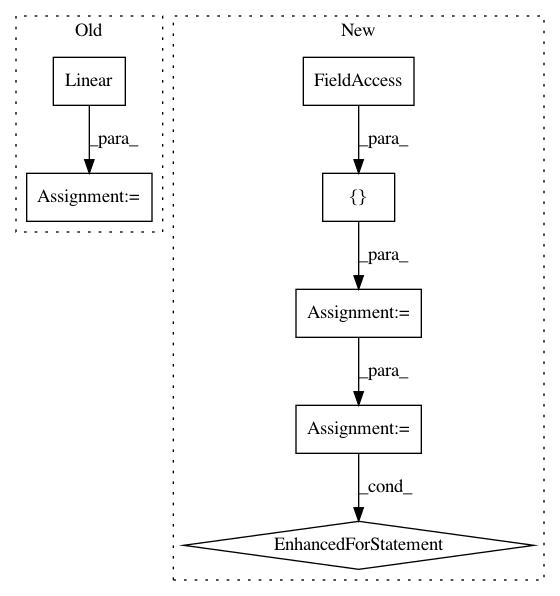

e12008d110acae507573b4f5feb02f94125a4463,test/quantization/test_quantized_module.py,TestDynamicQuantizedModule,test_linear_api,#TestDynamicQuantizedModule#Any#Any#Any#Any#Any#,864
Before Change
self.checkScriptable(qlinear, [[X]], check_save_load=True)
// Test from_float
float_linear = torch.nn.Linear(in_features, out_features).float()
if use_default_observer:
float_linear.qconfig = torch.quantization.default_dynamic_qconfig
prepare_dynamic(float_linear)
float_linear(X.float())
After Change
// Test JIT
self.checkScriptable(qlinear, [[X]], check_save_load=True)
modules_under_test = [torch.nn.Linear, torch.nn.modules.linear._LinearWithBias]
for mut in modules_under_test:
// Test from_float
float_linear = mut(in_features, out_features).float()
if use_default_observer:
float_linear.qconfig = torch.quantization.default_dynamic_qconfig
prepare_dynamic(float_linear)
float_linear(X.float())
quantized_float_linear = nnqd.Linear.from_float(float_linear)
// Smoke test to make sure the module actually runs
quantized_float_linear(X)
// Smoke test extra_repr
self.assertTrue("QuantizedLinear" in str(quantized_float_linear))
@given(
dtype=st.sampled_from([torch.qint8, torch.float16]),
In pattern: SUPERPATTERN
Frequency: 3
Non-data size: 7
Instances
Project Name: pytorch/pytorch
Commit Name: e12008d110acae507573b4f5feb02f94125a4463
Time: 2021-01-07
Author: cc.rafaz@zafar.cc
File Name: test/quantization/test_quantized_module.py
Class Name: TestDynamicQuantizedModule
Method Name: test_linear_api
Project Name: kengz/SLM-Lab
Commit Name: d4f36c2f11e20e6d5a7499cb9f717b03f5c1e787
Time: 2019-04-17
Author: kengzwl@gmail.com
File Name: slm_lab/agent/net/recurrent.py
Class Name: RecurrentNet
Method Name: __init__
Project Name: pytorch/pytorch
Commit Name: e12008d110acae507573b4f5feb02f94125a4463
Time: 2021-01-07
Author: cc.rafaz@zafar.cc
File Name: test/quantization/test_quantized_module.py
Class Name: TestStaticQuantizedModule
Method Name: _test_linear_api_impl